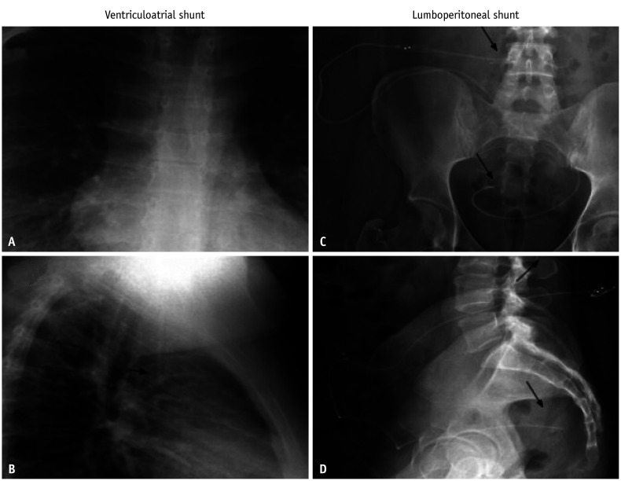
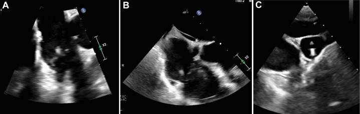
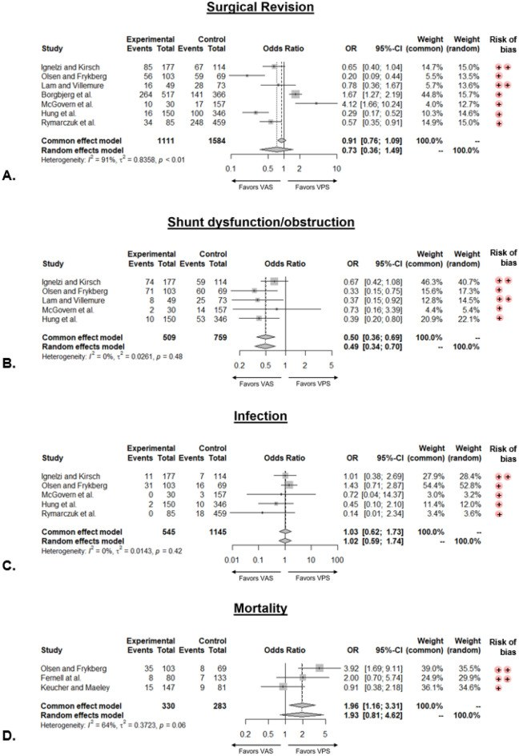

3041 — Shunt não thất–nhĩ (VA shunt): khi nào chọn, đọc biến chứng và khi nào chuyển lại VP
Tags: pattern:shunt-dan-luu pattern:huyet-khoi-tinh-mach pattern:viem-noi-tam-mac pattern:vien-cau-than vung:nao-that vung:tim-phai protocol:shunt-series protocol:CT-nguc protocol:sieu-am-tim
Mức chắc chắn (certainty): tổng hợp y văn (literature synthesis) — ghép meta phân tích 9 nghiên cứu/3.197 bệnh nhân so sánh VA và VP (PMC11310213), tổng quan cơ chế–chẩn đoán–điều trị huyết khối VA shunt (PMC8976808), tổng quan ảnh học shunt hiện đại có hình X-quang chuẩn (PMC13437215), ca viêm nội tâm mạc ở shunt VA (PMC11830242), ca tăng áp lực tĩnh mạch hệ thống gây tăng áp lực nội sọ (PMC12377171), ca viêm thận do shunt chẩn đoán bằng cấy dịch shunt (PMC11894289) và loạt 79 ca viêm thận do shunt (PMC5401727). Chưa có ca nguyên văn do nhóm tự chụp.
Câu hỏi thực hành: nam 31 tuổi, tiền sử não úng thủy bẩm sinh + shunt não thất–nhĩ (ventriculoatrial, VA), nhập viện sốt và sepsis dù đang dùng oxacillin. Bác sĩ hỏi: có phải nhiễm trùng shunt không, cấy máu dương thì cấy gì nữa, siêu âm tim để tìm gì, và có phải rút shunt không? Cùng lúc, một bé 6 tuổi có shunt VA đang đau đầu tăng dần nhưng siêu âm/chụp thấy ống thông vẫn thông — vì sao vẫn tăng áp lực nội sọ? Bài chốt ba tầng của shunt VA: dòng chảy (ống thông có thông không) ≠ áp lực đủ gradient (nhĩ phải có nhận được không) ≠ biến chứng hệ thống (huyết khối, viêm nội tâm mạc, viêm thận, tăng áp phổi). VA ít tắc hơn VP (OR 0,49) nhưng cái chết đến từ phía tim–thận, không phải từ đầu catheter. Nối 3039 – Nhiễm trùng shunt não thất–phúc mạc, 3037 – Nhiễm trùng não thất & EVD, 3034 – Chảy máu não thất & não úng thủy sau xuất huyết, 254 – Giãn tủy sau chấn thương, 093 – Hội chứng tĩnh mạch chủ trên.
1. Tổng quan bệnh học – cơ chế hình ảnh: vì sao “ống thông còn thông” mà bệnh nhân vẫn tăng áp lực nội sọ
- Nguyên lý dẫn lưu: dịch não tủy (CSF) chỉ chảy khi có chênh áp giữa khoang dưới nhện/não thất và nơi nhận: ΔP = ICP − P_nhận. Với shunt VA, P_nhận = áp lực nhĩ phải (right atrial pressure, RAP); với shunt VP, P_nhận = áp lực trong ổ phúc mạc. Van shunt chỉ mở khi ΔP vượt ngưỡng van, nên RAP tăng sẽ “khóa” dòng chảy dù ống thông không tắc.
- Bằng chứng cho cơ chế này: ca nữ 19 tuổi shunt VA, tăng áp lực nội sọ kháng trị dù đã chỉnh van nhiều lần và shunt “hoạt động tốt”; đo áp lực tĩnh mạch cho thấy áp lực tĩnh mạch cảnh 12–13 mmHg, và sức cản đầu ra ở đầu nhĩ 20 cmH₂O ≈ 15 mmHg — tức là gradient bị mất vì phía nhận quá cao, không phải vì tắc ống (PMC12377171). Đây là lý do đo CVP trước mổ có giá trị.
- Vì sao chọn VA: khi ổ phúc mạc “hết dùng được” — nang giả phúc mạc tái phát, kém hấp thu, viêm phúc mạc, dính sau mổ, cổ trướng, béo phì, dẫn lưu kéo dài; VA là lựa chọn hàng hai phổ biến nhất (PMC8976808).
- Hiệu quả so với VP (meta 9 nghiên cứu, 3.197 bệnh nhân):
- Rối loạn chức năng/tắc shunt: OR 0,49 (KTC 95% 0,34–0,70), I² = 0% → VA ít tắc hơn rõ rệt.
- Nhiễm trùng: OR 1,02 (0,59–1,74) → không khác.
- Mổ lại: OR 0,73 (0,36–1,49), I² = 91% → không kết luận được vì thiên lệch giữa các nghiên cứu.
- Tử vong: OR 1,93 (0,81–4,62), I² = 64% → xu hướng xấu hơn nhưng không có ý nghĩa (PMC11310213).
- Ngưỡng định lượng của biến chứng (phải nhớ vì quyết định theo dõi suốt đời):
- Huyết khối: 0,3% biểu hiện lâm sàng nhưng tới 60% ở loạt tử thiết; huyết khối trong lòng tim/mạch 34%; tỷ lệ tăng theo thời gian lưu ống: 20% sau 2 năm, 67% sau 6 năm, 85% sau 14 năm (PMC8976808).
- Thuyên tắc phổi (PE): 3,2% có ý nghĩa lâm sàng, nhưng 50–100% ở tử thiết.
- Tăng áp phổi (pulmonary hypertension): 0,3% được chẩn đoán trên lâm sàng, 6,3% ở tử thiết → phần lớn im lặng cho tới khi thành cor pulmonale.
- Phẫu thuật lấy huyết khối trong tim: tử vong mổ 21–67%; nếu đã có cor pulmonale mạn thì ~100%.
- Viêm thận do shunt (shunt nephritis): ước tính thấp tới 0,8%; trong 79 ca tổng quan: hồi phục hoàn toàn 29 (37%), một phần 40 (51%), suy thận giai đoạn cuối 4 (5%), tử vong 6 (8%); chỉ dùng kháng sinh không rút shunt: 0/9 hồi phục hoàn toàn, 3 tử vong (PMC5401727).
- Vì sao hình ảnh học phải đọc theo “đường đi + đầu xa”: trên X-quang, đầu catheter phải nằm ở ngã ba tĩnh mạch chủ trên–nhĩ phải; đầu xa quá sâu vào nhĩ/thất → loạn nhịp, thủng, huyết khối. Trên CT/echo, huyết khối bám đầu catheter là nguyên nhân của PE lặp lại và tăng áp phổi.

Hình chuẩn của shunt não thất–nhĩ. A (thẳng) và B (nghiêng): ống thông đi từ vùng trán–cổ xuống tĩnh mạch cảnh trong, qua tĩnh mạch chủ trên, đầu xa dừng ở nhĩ phải (mũi tên). C, D: ví dụ đối chiếu của shunt thắt lưng–phúc mạc (đi trong ống sống rồi đổ vào ổ phúc mạc) — không phải shunt VA, đặt cạnh để phân biệt đường đi trước–sau. Nguồn: Korean J Radiol 2026 (PMC13437215), CC BY-NC 4.0.2. Mẫu hình + chẩn đoán phân biệt theo vị trí và theo biến chứng (gamut)
- Theo vị trí tổn thương (đọc trên X-quang/CT/echo):
- Đầu gần (não thất): tắc lỗ catheter, xuất huyết trong não thất, nhiễm trùng đường hầm.
- Thân ống ở cổ: gập, đứt, nhiễm đường hầm, huyết khối tĩnh mạch cảnh.
- Đoạn trong lồng ngực (SVC): hẹp/huyết khối SVC → hội chứng tĩnh mạch chủ trên, tràn dịch dưỡng trấp.
- Đầu xa ở nhĩ phải: huyết khối quanh catheter (34%), viêm nội tâm mạc, loạn nhịp, thủng, di trú (đã có ca vào xoang vành).
- Phổi: PE (3,2% lâm sàng), tăng áp phổi (0,3–6,3%), cor pulmonale.
- Thận: viêm thận do shunt — bệnh cảnh viêm cầu thận do phức hợp miễn dịch, biểu hiện tiểu máu, protein niệu, bổ thể giảm.
- Theo kiểu biểu hiện lâm sàng (gamut “shunt VA có triệu chứng”):
- Sốt/sepsis + cấy máu dương: nghĩ nhiễm trùng shunt/viêm nội tâm mạc trước, không chỉ viêm màng não.
- Đau đầu + nôn + phù gai, shunt “vẫn thông”: nghĩ áp lực nhĩ phải cao, huyết khối SVC, hoặc van quá áp.
- Khó thở + giảm oxy + siêu âm tim có tăng áp phổi: nghĩ PE mạn/tăng áp phổi do shunt.
- Tiểu máu + phù + creatinine tăng: nghĩ viêm thận do shunt (không phải nhiễm khuẩn tiết niệu).
- Đau ngực, loạn nhịp, ngất: nghĩ đầu catheter trong nhĩ/thất, thủng, tràn dịch màng tim.
- Mnemonic “VA-HIT”: Valve/volume (van, quá dẫn lưu) – Atrial pressure (áp lực nhĩ) – Heart (viêm nội tâm mạc, huyết khối) – Infection (nhiễm trùng shunt, viêm thận) – Thrombosis (SVC/PE/tăng áp phổi).
3. Bảng so sánh phân biệt (ma trận đối chiếu)
3a. Chọn đường dẫn lưu khi ổ phúc mạc không dùng được
| Đường dẫn lưu | Chỉ định hợp lý | Chốt vào (rule-in) | Chốt loại (rule-out) | Theo dõi chính |
|---|---|---|---|---|
| VA (não thất–nhĩ) | Nang giả/kém hấp thu phúc mạc tái phát, dính ổ bụng, cổ trướng | Ổ phúc mạc đã thất bại ≥ 1 lần + không nhiễm trùng toàn thân | Nhiễm trùng shunt đang hoạt động, huyết khối SVC, tăng áp phổi nặng | X-quang đầu catheter, echo khi có triệu chứng, cấy máu |
| VP (não thất–phúc mạc) | Mặc định, ổ bụng còn dùng được | Ổ bụng hấp thu tốt, không nang giả | Nang giả tái phát, viêm phúc mạc, cổ trướng | CT bụng khi đau, siêu âm |
| VPL (não thất–màng phổi) | Ổ bụng và tim đều không thuận lợi | Dung tích màng phổi đủ, không bệnh phổi | Tràn dịch màng phổi tái phát, suy hô hấp | X-quang ngực, siêu âm màng phổi |
| ETV (mở thông não thất III) | Não úng thủy tắc nghẽn, không cần vật liệu | Tắc nghẽn đường ra + não thất III giãn | Não úng thủy kém hấp thu (ETV ít hiệu quả) | MRI định kỳ, lâm sàng |
3b. Biến chứng shunt VA — phân biệt bằng hình ảnh và xét nghiệm
| Thực thể | Hình ảnh / xét nghiệm điển hình | Chốt vào (rule-in) | Chốt loại (rule-out) | Gợi ý xác nhận |
|---|---|---|---|---|
| Nhiễm trùng shunt/đường hầm | X-quang mô mềm quanh ống, CT có ngấm thuốc dọc đường hầm; cấy máu/DNT | Cấy máu và/hoặc DNT dương + sốt | Cấy âm không loại trừ (đã dùng kháng sinh) | Cấy dịch shunt; rút toàn bộ khi nhiễm |
| Viêm nội tâm mạc do shunt | Siêu âm tim qua thực quản (TEE): sùi trên van ba lá/đầu catheter | Sùi di động + cấy máu dương (ca: sùi 11 mm van ba lá) | TEE âm không loại trừ nếu nghi cao | Rút shunt + kháng sinh 6 tuần (ca: oxacillin + rifampin) |
| Huyết khối trong nhĩ/SVC | CT tĩnh mạch/echo: khối trong lòng bám đầu catheter | Khối bám catheter + không đổi hình theo thì | Khối di chuyển tự do → nghĩ huyết khối mới, cần xử trí cấp | CTPA/echo; 34% có huyết khối trong lòng |
| PE/tăng áp phổi | CTPA: khuyết tĩnh mạch; echo: PAP tăng, thất phải giãn | CTPA dương + tăng áp phổi trên echo | CTPA âm không loại trừ PE mạn vi mạch | Theo dõi nhiều năm; PE gặp 50–100% ở tử thiết |
| Viêm thận do shunt | Tiểu máu, protein niệu, C3/C4 giảm, creatinine tăng; cấy dịch shunt | Bệnh thận + shunt nhiễm + bổ thể giảm | Không cần sinh thiết thận nếu cấy dịch shunt dương | Kháng sinh + rút shunt; 51% hồi phục một phần |
| Tăng áp lực nội sọ do RAP cao | MRI/CT não giãn não thất; đo CVP/JVP; chụp tĩnh mạch | ICP cao + CVP cao (12–13 mmHg) + shunt không tắc | CVP bình thường → tìm nguyên nhân khác (van, tắc đầu gần) | Hạ áp lực tĩnh mạch, cân nhắc chuyển VP |

Nam 31 tuổi, shunt VA từ nhỏ, sepsis do Staphylococcus aureus nhạy methicillin. TEE cho thấy sùi 11 mm trên lá van ba lá sau, di động (A, B) và sùi tại đầu catheter (C). Đây là hình mẫu “biến chứng tim” của shunt VA: ổ nhiễm nằm ngay trên vật liệu, nên kháng sinh đơn thuần không đủ — phải rút shunt rồi mới điều trị 6 tuần. Nguồn: JACC Case Reports 2025 (PMC11830242), CC BY-NC-ND 4.0 (giữ nguyên bản).Bằng chứng nền: VA so với VP (đọc đúng chiều của OR)

Gộp 9 nghiên cứu, 3.197 bệnh nhân. Rối loạn chức năng/tắc: OR 0,49 (0,34–0,70), I² = 0% — VA tốt hơn. Nhiễm trùng: OR 1,02 (0,59–1,74) — không khác. Mổ lại: OR 0,73 (0,36–1,49), I² = 91% và tử vong: OR 1,93 (0,81–4,62), I² = 64% — không kết luận vì phương sai lớn. Đọc kỹ: “VA ít tắc hơn” không đồng nghĩa “VA an toàn hơn toàn diện”. Nguồn: Scientific Reports 2024 (PMC11310213), CC BY 4.0.4. Protocol
- Trước mổ — xác nhận chỉ định và loại trừ chống chỉ định:
- Chứng minh ổ phúc mạc thất bại (nang giả tái phát, kém hấp thu, viêm phúc mạc) — không chọn VA chỉ vì “tiện”.
- Loại trừ nhiễm trùng shunt đang hoạt động (cấy máu, cấy dịch shunt, CRP) — đặt shunt vào tim khi đang nhiễm là thảm họa.
- Đánh giá tĩnh mạch trung tâm: tiền sử catheter tĩnh mạch trung tâm nhiều lần → CT tĩnh mạch tìm hẹp/tắc SVC trước khi đặt.
- Siêu âm tim nếu có tiền sử thổi tim, tăng áp phổi, hoặc shunt VA cũ.
- Kỹ thuật đặt đầu xa:
- Siêu âm dẫn đường chọc tĩnh mạch cảnh trong (percutaneous) thay vì mở da: thời gian đặt đầu xa 13,36 phút vs 30,22 phút (p = 0,00001); tỷ lệ thay catheter 35,7% vs 55,5% (không có ý nghĩa) (PMC12812172).
- Đầu catheter ở ngã ba SVC–nhĩ phải; kiểm tra X-quang ngay (thẳng + nghiêng) trước khi đóng da — đầu quá sâu vào nhĩ → loạn nhịp/thủng.
- Ở trẻ: catheter đủ dài theo tăng trưởng, tránh căng; loạt 8 trẻ đặt qua da cho thấy 3/8 (37,5%) có biến chứng, trong đó 2/8 (25%) huyết khối — cỡ mẫu nhỏ, nhưng nhắc theo dõi sát (PMC13591038).
- Sau mổ — theo dõi “3 tầng”:
- Tầng van/đầu gần: đau đầu, nôn, kích thích, giãn não thất trên CT → kiểm tra van/đầu gần.
- Tầng tim: X-quang định kỳ vị trí đầu xa; echo khi có thổi tim, sốt, khó thở; đo CVP khi nghi tăng áp lực nội sọ mà shunt “vẫn thông”.
- Tầng thận: tổng phân tích nước tiểu + creatinine + C3/C4 định kỳ (6–12 tháng) — viêm thận do shunt âm thầm trong nhiều năm.
- Điều trị biến chứng — nguyên tắc “vật liệu ngoại lai phải ra”:
- Nhiễm trùng shunt/viêm nội tâm mạc: rút toàn bộ shunt + kháng sinh 6 tuần (ca MSSA: oxacillin + rifampin), sau đó đặt lại khi hết nhiễm.
- Viêm thận do shunt: kháng sinh + rút shunt — trong 79 ca, chỉ kháng sinh không rút: 0/9 hồi phục hoàn toàn (PMC5401727).
- Huyết khối trong nhĩ: cân nhắc lấy huyết khối (tử vong mổ 21–67%) hoặc can thiệp nội mạch; không tiêu sợi huyết đơn thuần vì huyết khối bám vật liệu.
- Tăng áp lực nội sọ do RAP cao: điều trị nguyên nhân tăng áp lực nhĩ; ca báo cáo dùng nitroglycerin để giảm ICP (nhưng đau đầu tăng) và acetazolamide giảm triệu chứng — chỉ là biện pháp tạm (PMC12377171).
- Khi nào chuyển lại VP: ổ phúc mạc hồi phục (hết nang giả/nhiễm), hoặc biến chứng tim–thận không kiểm soát được → rút VA, đặt VP sau khi điều trị nhiễm.
- Dự phòng (bằng chứng yếu): một loạt 13 trẻ dùng aspirin 5 mg/kg/ngày từ ngày 1 sau mổ, theo dõi 28–170 tháng, 0% rối loạn chức năng đầu xa — quan sát, một trung tâm, chưa đủ để thành khuyến cáo (PMC11875709).
flowchart TD
A["Shunt VP thất bại hoặc ổ phúc mạc không dùng được"] --> B{"Còn nhiễm trùng shunt đang hoạt động?"}
B -- "Có" --> B1["Rút shunt + kháng sinh<br/>đặt lại khi hết nhiễm"]
B -- "Không" --> C{"Tĩnh mạch trung tâm còn thông?<br/>CT tĩnh mạch khi có tiền sử catheter"}
C -- "Hẹp hoặc tắc SVC" --> C1["Cân nhắc VPL hoặc ETV<br/>không đặt VA qua chỗ hẹp"]
C -- "Thông" --> D["Đặt VA qua da dưới siêu âm<br/>đầu xa ở ngã ba SVC–nhĩ phải"]
D --> E["X-quang thẳng + nghiêng xác nhận<br/>trước khi đóng da"]
E --> F{"Triệu chứng sau mổ"}
F -- "Đau đầu, giãn não thất, shunt vẫn thông" --> F1["Đo CVP/JVP<br/>RAP cao = nguyên nhân"]
F1 --> F2["Hạ áp lực nhĩ tạm thời<br/>cân nhắc chuyển VP"]
F -- "Sốt hoặc cấy máu dương" --> G["Cấy máu + cấy dịch shunt + TEE"]
G -- "Sùi hoặc cấy dương" --> G1["Rút shunt + kháng sinh 6 tuần"]
F -- "Tiểu máu, protein niệu, C3 giảm" --> H["Viêm thận do shunt<br/>kháng sinh + rút shunt"]
F -- "Khó thở, PAP tăng" --> I["CTPA + echo<br/>PE hoặc tăng áp phổi"]
I --> I1["Chống đông hoặc lấy huyết khối<br/>theo mức độ"]
G1 --> J["Đặt lại VP khi ổ phúc mạc hồi phục"]
F2 --> J
H --> J
5. Biến thể bình thường và cạm bẫy
- “Shunt vẫn thông” không loại trừ tăng áp lực nội sọ: nếu RAP cao, gradient mất dù ống thông hoàn hảo. Đo CVP là bước bị bỏ quên nhất (ca 19 tuổi: JVP 12–13 mmHg, sức cản đầu ra 20 cmH₂O).
- Đầu catheter “trông đẹp” trên X-quang vẫn có thể sai: cần hai bình diện; đầu quá thấp trong nhĩ → loạn nhịp/thủng, đầu quá cao ở SVC → tắc do thành mạch.
- Sốt ở bệnh nhân shunt VA: đừng chỉ nghĩ viêm màng não — viêm nội tâm mạc và nhiễm khuẩn huyết là hàng đầu; TEE cần thiết vì sùi có thể nhỏ.
- Cấy máu âm không loại trừ: bệnh nhân đã dùng kháng sinh (như ca oxacillin) vẫn có sùi 11 mm; cấy dịch shunt có thể là mẫu quyết định (ca viêm thận: CSF cấy P. acnes).
- Tiểu máu ở người có shunt: đừng mặc định nhiễm khuẩn tiết niệu — kiểm tra bổ thể, protein niệu, creatinine; viêm thận do shunt có thể tiến tới suy thận giai đoạn cuối (4/79) hoặc tử vong (6/79).
- Di trú đầu xa: đã có ca đầu catheter vào xoang vành gây rối loạn; luôn so X-quang cũ để phát hiện di lệch.
- Tăng trưởng ở trẻ: ống thông không dài theo trẻ → kéo đầu catheter ra khỏi nhĩ hoặc căng đường hầm; theo dõi X-quang khi trẻ lớn nhanh.
- Đừng “nâng cấp” VA thành lựa chọn đầu tay: meta cho thấy ít tắc hơn nhưng tử vong/mổ lại không tốt hơn, và biến chứng tim–thận là loại không hồi phục — chỉ dùng khi có chỉ định rõ.
6. Tự lượng giá — Blind Quiz
Ca 1 — Nam 31 tuổi, shunt VA từ nhỏ, sốt 3 ngày, cấy máu MSSA. Xem phim dưới đây trước khi đọc đáp án.
- Câu hỏi: (1) Đầu catheter nằm ở đâu, có đúng vị trí không? (2) Trên phim này cần tìm thêm dấu hiệu gì? (3) Bước tiếp theo ngoài kháng sinh?
Bấm để hiện đáp án (findings + chẩn đoán)
- Vị trí: ống thông đi từ vùng trán–cổ → tĩnh mạch cảnh trong → tĩnh mạch chủ trên → đầu xa ở nhĩ phải (mũi tên A, B). Đây là vị trí chuẩn; không nằm trong thất phải hay động mạch phổi.
- Cần tìm: đường hầm quanh ống (dày, khí, dịch), đầu catheter có gập, và dấu hiệu tăng áp phổi (động mạch phổi giãn, tim phải to).
- Bước tiếp theo: TEE tìm sùi (ca gốc: sùi 11 mm van ba lá + đầu catheter), cấy dịch shunt, và rút toàn bộ shunt + kháng sinh 6 tuần — kháng sinh đơn thuần thất bại vì vi khuẩn bám vật liệu.
- Nguồn ảnh: Korean J Radiol 2026 (PMC13437215), Figure 3, CC BY-NC 4.0.
Ca 2 — Nữ 19 tuổi, shunt VA, đau đầu tăng dần 3 tuần, CT não giãn não thất. Siêu âm và chụp cho thấy ống thông không tắc.
- Câu hỏi: (1) Vì sao shunt “không tắc” mà vẫn tăng áp lực nội sọ? (2) Cần đo gì? (3) Hướng xử trí?
Bấm để hiện đáp án (findings + chẩn đoán)
- Cơ chế: dòng CSF phụ thuộc ΔP = ICP − RAP; khi RAP tăng, van không mở dù ống thông thông. Ca tương tự trong y văn: JVP 12–13 mmHg, sức cản đầu ra 20 cmH₂O ≈ 15 mmHg.
- Cần đo: CVP/JVP (và áp lực nhĩ phải nếu có), đối chiếu với áp lực mở van; loại trừ hẹp SVC bằng CT tĩnh mạch.
- Xử trí: điều trị nguyên nhân tăng áp lực nhĩ; nitroglycerin có thể hạ ICP (ca báo cáo, nhưng gây đau đầu) và acetazolamide giảm triệu chứng; nếu không kiểm soát → chuyển VP.
- Lưu ý: ảnh trong ca này là TEE của ca viêm nội tâm mạc (minh họa biến chứng tim của shunt VA), không phải ảnh của ca tăng áp lực nhĩ — dùng đúng bối cảnh, không gán sai bệnh nhân.
- Nguồn ảnh: JACC Case Reports 2025 (PMC11830242), Figure 1, CC BY-NC-ND 4.0.
Ca 3 — Bạn đọc forest plot dưới đây để tư vấn phụ huynh “VA có an toàn hơn VP không?”
- Câu hỏi: (1) Kết quả nào có ý nghĩa? (2) Kết quả nào không kết luận được, vì sao? (3) Câu trả lời trung thực cho gia đình?
Bấm để hiện đáp án (findings + chẩn đoán)
- Có ý nghĩa: tắc/rối loạn chức năng OR 0,49 (0,34–0,70), I² = 0% → VA ít tắc hơn khoảng một nửa.
- Không kết luận: mổ lại OR 0,73 (0,36–1,49) với I² = 91%, tử vong OR 1,93 (0,81–4,62) với I² = 64% — khoảng tin cậy rộng và phương sai lớn; nhiễm trùng OR 1,02 = không khác.
- Trả lời gia đình: “VA ít phải mổ lại vì tắc ống hơn, nhưng không chứng minh an toàn hơn toàn diện; vì vậy chỉ chọn VA khi ổ bụng không dùng được, và phải theo dõi tim–thận lâu dài.”
- Nguồn ảnh: Scientific Reports 2024 (PMC11310213), Figure 2, CC BY 4.0.
Bài liên quan chéo
- 3039 – Nhiễm trùng shunt não thất–phúc mạc & nang giả phúc mạc
- 3037 – Nhiễm trùng não thất & nhiễm trùng EVD
- 3034 – Chảy máu não thất & não úng thủy sau xuất huyết
- 093 – Hội chứng tĩnh mạch chủ trên
- 3043 – Hẹp–tắc tĩnh mạch chủ trên lành tính ở trẻ sau catheter trung tâm (đánh giá SVC trước khi đặt VA)
- 254 – Giãn tủy sau chấn thương tủy sống
Không dùng để chẩn đoán độc lập khi chưa có người hướng dẫn.